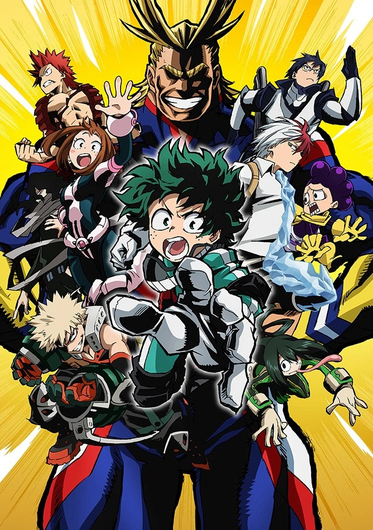
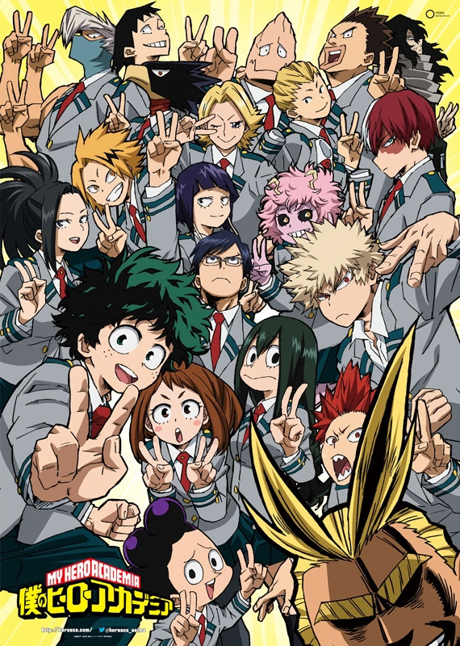
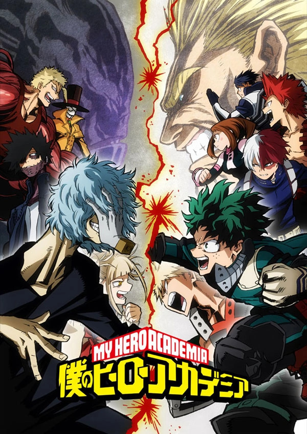
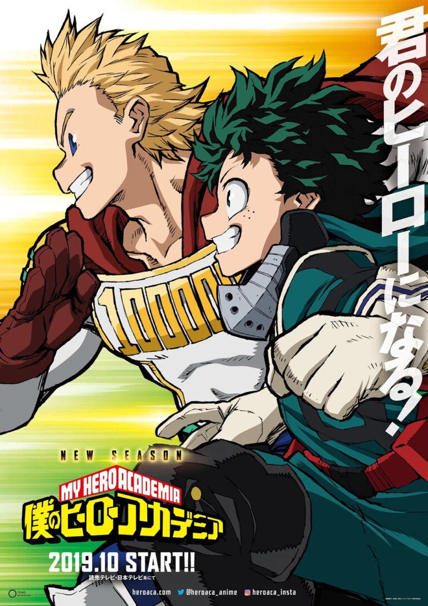
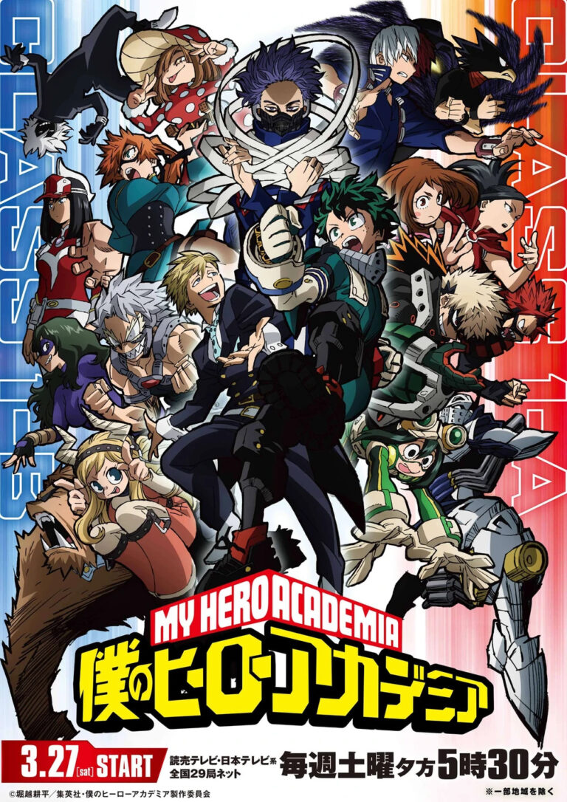
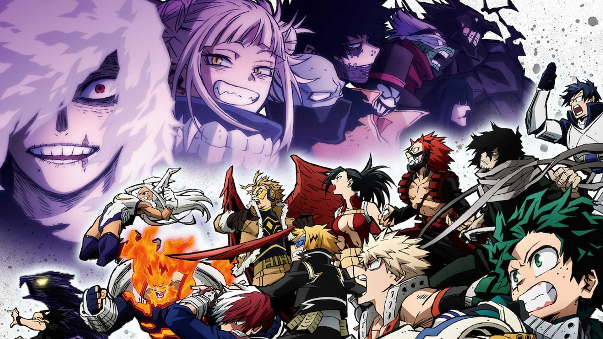

Сюжет
История
Герои
В меню
1 СЕЗОН
Изуку Мидория, мальчик без причуд, стремится стать героем, но герой номер один Японии, Всемогущий, и Бакуго отговаривают его стать им, поскольку у него нет причуд. Однако Всемогущий выбирает Мидорию в качестве преемника «Один за всех», когда Мидория спасает Бакуго от злодея, с которым он сражался ранее.Мидория тренируется под опекой Всемогущего и сдает физический экзамен, несмотря на то, что серьезно ранил себя, чтобы спасти других на поле боя. Он также бодается с Бакуго во время групповых тренировок.
Томура и его банда злодеев нападают на школу после того, как замечают, что Всемогущий присоединился к ней в качестве преподавательского состава. Он пытается выманить Всемогущего, чтобы сразиться с ним, используя своего монстра с множеством причуд, Ному, против студентов.У Всемогущего нет другого выбора, кроме как броситься в бой. Он пытается сдержать Шигараки и других злодеев с той небольшой силой, что у него есть.Ученики UA High сдерживают злодеев достаточно долго, пока Eraser Head, Present Mic и несколько других учителей не прогонят злодеев навсегда.

2 СЕЗОН
Мидория узнает об ограничениях своей причуды, когда Всемогущий сообщает ему, что он может сохранять форму героя только 50 минут. Он призывает Мидорию взять на себя титул Символа мира, хвастаясь во время Спортивного фестиваля.Класс 1-A доминирует в рейтингах во время фестиваля, поскольку у них уже есть опыт борьбы со злодеями в реальных битвах.
Шото Тодороки, одноклассник, делает вывод, что Мидория может быть сыном Всемогущего из-за сходства их причуд, и показывает, что его отцом является Стремление, герой номер два в Японии. Он клянется превзойти его, поскольку его отцу так и не удалось превзойти Всемогущего.
Тодороки и Мидория вступают в захватывающую битву во время спортивного фестиваля. Мидория ранит себя, а Тодороки чуть не переохлаждается, но, тем не менее, выходит победителем, используя свою огненную причуду. Затем Тодороки сражается с Бакуго, но уступает и позволяет ему победить.Тем временем злодеи пытаются завербовать Штейна, но их усилия не вознаграждаются, поскольку он отклоняет их предложение, поскольку убивает героев только ради славы. Мидория присоединяется к стажировке героя в Гран Торино.
Новые Ному нападают на город, и Мидория должен остановить Тенью от безрассудства и борьбы против Пятна в одиночку, чтобы отомстить за своего брата. Мидория, Тенья и Тодороки сражаются против него и побеждают.
Всемогущий показывает, что Все за Одного обладает способностью передавать причуды, и он использовал эту способность, чтобы передавать причуды людям без причуд, включая своего младшего брата Йоичи. Йоичи - тот, кто обладал оригинальной способностью «Один за всех», и, используя свою пассивную причуду, он передал эту способность своему преемнику, чтобы они могли победить Всех за Одного.

3 СЕЗОН
Класс 1-A подвергается нападению со стороны группы Томуры во главе с Даби, когда они тренируются в лесу во время летних каникул. Им удается достичь своей цели похитить Бакуго, протащив его через портал Курогири.Мидория, Киришима, Тодороки и Момо отправляются на миссию по спасению своего друга, используя трекер, который она имплантировала одному из ному во время битвы.Причина, по которой Лига злодеев похищает Бакуго, заключалась в том, чтобы убедить его присоединиться к ним из-за его агрессии, но он отказывается от их предложения. Всемогущий спасает Бакуго, используя Один за Всех в последний раз, передав свою причуду Мидории.
Тодороки и Бакуго проваливают экзамен на временную лицензию героя. Бакуго и Мидория в конечном итоге сражаются друг с другом из-за заимствованных способностей Мидории, и Айзава отстраняет их от школы на несколько дней.
Когда Мидория возвращается в школу, их знакомят с Большой тройкой (Мирио, Амаджики и Хада).

4 СЕЗОН
Якудза планирует использовать одну пулю, используя Эри, чтобы навсегда избавиться от причуд. Мидория и Мирио пытаются спасти Эри, и им это удается. Однако Мирио платит высокую цену во время этой миссии, поскольку одна из пуль попала в него, и он теряет свою причуду.В этом сезоне мы также наблюдаем истинную природу Endeavour. Показано, что он женился на матери Тодороки только потому, что хотел превзойти Всемогущего, заставив ее родить ребенка с мощной причудой.Он действительно достигает своей цели - превзойти Всемогущего, поскольку в новом рейтинге 10 лучших героев он указан как герой номер один.

5 СЕЗОН
Мидория пробуждает свою новую причуду, Блэкхип, когда он участвует в битве между классом A и классом B. Шинсо, ученик класса C, у которого есть причуда контроля над разумом, помогает Мидории оттачивать свои навыки.Мидория, Тодороки и Бакуго записываются на программу обучения работе и начинают стажировку в Endeavour. Тем временем Индевор получает секретное сообщение от Ястребов о том, что Армия мета-освобождения планирует атаковать Японию.
Армия Мета Освобождения и Лига Злодеев сражаются друг с другом, чтобы определить, кто лучше. Банда Томуры побеждает после того, как он превращает город Декай в гигантский кратер с помощью своей причуды. Армия мета-освобождения и Лига злодеев объединяются, чтобы сформировать Фронт освобождения от паранормальных явлений.

6 сезон
Сезон следует за кульминационной битвой Героев с учениками средней школы США, включая Изуку Мидорию, и злодеями Фронта освобождения от паранормальных явлений во главе с Томурой Шигараки. Благодаря информации, собранной Ястребами, находясь под прикрытием в группе объединенных злодеев, Герои противостоят им, что приводит к тотальной войне, которая может изменить сверхчеловеческое общество. Вторая половина сезона рассказывает о последствиях войны; Герои продолжают спасать мирных жителей и захватывать в плен злодеев, одновременно разбираясь с их жертвами в результате потери доверия общественности. Когда все за одного сбегают из Тартара и секреты "Одного за всех" начинают раскрываться общественности, Изуку понимает, что его способности делают его особой мишенью для злодеев на свободе, и поэтому его присутствие в школе подвергает опасности его одноклассников. Изуку решает покинуть школу, чтобы помочь Профессиональным героям, когда они пытаются выманить злодеев из укрытия.
